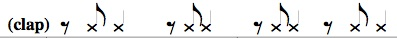

To hear a performance of part of this song, go to Bless the Lord | OCP.org and click on play bar under "Listen:".
To hear a performance of part of this song, go to Bless the Lord | OCP.org and click on play bar under "Listen:".
EXPLANATION OF THE GLOSSING SYSTEM
(to understand how I describe the signs in this translation).
Refrain: MY SOUL PRAISE THE-rt LORD. PRAISE GOD HIS-rt HOLY NAME.
1. REMEMBER OUR GOD HIMSELF-rt KIND.
EVERYDAY OUR LIFE HE-rt BLESS US LONG-LIST.
2. REMEMBER OUR GOD HIMSELF-rt JUST.
SOCIETY REJECT (2h)YOU, GOD SUPPORT++.
3. REMEMBER GOD HIS-rt LOVE HEAL CAN.
HE-rt SUMMON US BECOME COMPLETE, BECOME FREE.
Notes: THE - Underlined words are honorific indices ("indexes"), using the FT of the upturned palm to indicate who is being honored.
HOLY - H-CLEAN. For a QuickTime file of this sign, see ASL Pro: Holy - 1.
KIND - (2h)[B^], POs ><, FOs away, NDH is held close to heart and DH circles around it.
LONG-LIST - (2h)[O^], POs > signer, NDH - above and touches DH; both hands open to (2h)[5] while DH descends.
JUST - (2h)[B^], POs ><, FOs up, tap FT while moving in a horizontal circle.
REJECT - Hands start like the final position of STOP and DH slides > DS while pronating.
Lyrics:
Refrain: Bless the Lord, O my soul; bless God's holy name.
1. Remember the kindness of our God, who showers us with blessing all our days.
2. Remember the justice of our God, who stands with those forgotten and confused.
3. Remember the healing love of God, who calls us to be whole and to be free.
To hear a performance of part of this song, go to Bless the Lord | OCP.org and click on play bar under "Listen:".